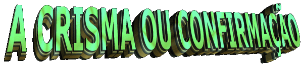
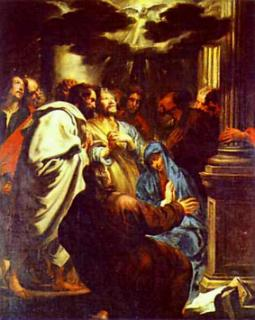
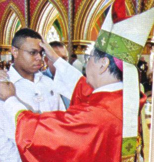
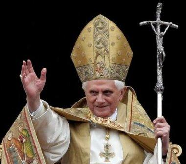

O Catecismo da Igreja Católica afirma: (1.286)
No Antigo Testamento
os profetas anunciaram que o Espírito do Senhor repousaria 
Ora, esta plenitude do Espírito não devia ser apenas a do Messias; devia ser comunicada a todo o povo messiânico. Por várias vezes Jesus prometeu esta efusão do Espírito, promessa que realizou primeiramente no dia da Páscoa (na Última Ceia) e em seguida, de maneira mais marcante, no dia de Pentecostes, em que os Apóstolos repletos do Espírito Santo, “proclamaram as maravilhas de Deus”.
Na sequência, os Apóstolos cumprindo a Vontade de Jesus, comunicaram aos neófitos, pela imposição das mãos, o dom do Espírito. É por isso mesmo que a imposição das mãos é reconhecida pela tradição católica como a origem do Sacramento da Confirmação que perpetua, de certo modo, na Igreja, a graça de Pentecostes.
Por outro lado é comum ouvir-se que a Crisma nos faz Soldados de Cristo; que confirma o Batismo; que é o Sacramento do Testemunho; o Sacramento da Ação Católica e o Sacramento da Juventude. Serão estas as suas melhores características?
Para se definir melhor o Sacramento da Crisma ou Confirmação, vamos esclarecer que todos os Sacramentos foram instituídos por Jesus e todos nos concedem o Espírito Santo, mas um deles, o Sacramento da Eucaristia, é por excelência o Sacramento de Cristo. No momento da Consagração na Santa Missa, acontece o fenômeno sobrenatural da “Transubstanciação”, o Espírito Santo transforma o pão e o vinho em Corpo, Sangue, Alma e Divindade de Nosso Senhor Jesus Cristo. Então, este fica sendo mais específicamente o Sacramento de Jesus.
Confirmando, todos os Sacramentos são do Espírito Santo, porque em todos eles, temos a ação dinâmica e poderosa do Espírito Santo, mas num deles, o Sacramento da Crisma ou Confirmação, é, por excelência, o Sacramento do Espírito Santo.
Para melhor compreendermos o sentido deste Sacramento, vemos pela Sagrada Escritura que o Espírito Santo tem uma dupla função: “a de dar a vida ou suscitar a vida” e a função de “levar a vida até sua perfeição”. São duas funções plenamente distintas e que se completam. Pelo Batismo, o Espírito Santo nos concede a “Vida Divina”, e no Sacramento da Crisma recebemos o Espírito Santo para chegarmos a “Perfeição” no cumprimento da missão existencial.

De modo semelhante também nós. Recebemos o “dom da nova vida” no Batismo por obra do Espírito Santo, oportunidade em que nos tornamos com Cristo, sacerdotes, reis e profetas. Outra realidade é exercer esta função em toda a sua plenitude em nossa vida cristã. Então existe também para nós o dia de Pentecostes. Na nossa Crisma ou Confirmação nós somos ungidos pelo dom do Espírito Santo para que possamos exercer a nossa função de reis e rainhas no Reino de Deus, como senhores e senhoras do mundo; como profetas e profetisas, para indicar as realidades do Reino de Deus a todos os homens; e primordialmente, como sacerdotes e sacerdotisas, para encaminhar e orientar tudo para o seu fim último que é Deus. Este é o sentido da Crisma, “o nosso Pentecostes”, que nos dá o Espírito Santo para “levarmos até a perfeição os dons que recebemos no Batismo”, para vivermos com santidade em todas as circunstâncias de nossa vida, no trabalho, no lar, nas alegrias e tristezas, na construção do mundo e no culto, segundo a Vontade do Pai Eterno. Então realmente podemos afirmar que a Crisma ou Confirmação é por excelência o Sacramento do Espírito Santo.
“Os Candidatos a Crisma”.
Continua o costume de se crismar as crianças na Igreja pela idade dos sete a oito anos, com o uso da razão. Admite-se no entanto que, por motivos pastorais, para uma melhor preparação e engajamento, seja adiada a Confirmação para uma idade que pareça mais conveniente.
O novo ritual aconselha que o Padrinho da Crisma, seja o mesmo do Batismo, mas não se proíbe a escolha por parte do crismando ou da família de um novo Padrinho. Mas o importante e essencial, sobretudo, que eles sejam cristãos praticantes e tenham todas as condições exigidas pela Igreja, conforme vimos no Sacramento do Batismo.
A cerimônia geralmente é realizada durante a celebração da Santa Missa.
O Ministro da Crisma normalmente é o Bispo Diocesano. Isso significa dizer que a Confirmação está intimamente ligada à primeira efusão do Espírito Santo no dia de Pentecostes. Os Bispos, como os Apóstolos, continuam a exercer a função de transmitir o Espírito Santo àqueles que creram e foram batizados. Todavia, em casos especiais, o sacerdote também pode administrar o Sacramento da Crisma.
“Rito da Crisma ou Confirmação”.
Às vezes falamos em quem vai administrar a
Crisma, ou em quem vai receber a 
A Santa Missa começa como de costume, com cantos e orações especiais, podendo, é claro, haver uma entrada solene dos candidatos, junto com o celebrante.
Na homilia, a Igreja costuma contemplar o plano de Deus revelado na História da Salvação da humanidade.
Concluída a Liturgia da Palavra, os candidatos são apresentados ao Bispo, pelo Pároco, ou por algum outro presbítero, ou por um ministro ou ainda, pelo (a) catequista que os preparou para a Crisma.
O Bispo ou Celebrante lhes dirige a palavra numa pequena mas objetiva homilia sobre o Plano de Deus de Salvação da humanidade, e logo a seguir, é feita a Renovação das promessas do Batismo, com a resposta de cada crismando.
Estando todos em atitude de fé e de conversão, Deus se faz presente pelo sinal da Graça. Desde o Antigo Testamento, e também no tempo dos Apóstolos, conhecem-se dois gestos de doação do Espírito Santo: a imposição das mãos e a unção. Os dois gestos têm o mesmo significado: a transmissão do Espírito Santo.
O Bispo, tendo em torno de si os presbíteros, convida toda a assembléia a rezar, suplicando que o Pai envie o Espírito Santo sobre cada crismando, confirmando-os com seus dons. E todos rezam por algum tempo em silêncio.
“Imposição das Mãos”.
O Bispo impõe as mãos sobre cada confirmando dizendo a oração: “Deus Todo-Poderoso, Pai de nosso Senhor Jesus Cristo, que, pela água e pelo Espírito Santo, fizestes renascer estes vossos servos, libertando-os do pecado, enviai-lhes o Espírito Santo Paráclito; dá-lhes, Senhor, o espírito de sabedoria e inteligência, o espírito de conselho e fortaleza, o espírito de ciência e piedade e enchei-os do espírito do vosso temor. Por nosso Senhor Jesus Cristo, vosso Filho, na unidade do Espírito Santo”.
“Unção com o óleo santo crisma”.
A seguir, o crismando com seu Padrinho, o qual coloca a mão sobre o ombro direito do afilhado, aproximam-se do Bispo, atendendo ao chamado do locutor.
O Bispo unge a fronte do crismando, dizendo a forma da Confirmação:
“Nome........, recebe, por este sinal, o Dom do Espírito Santo”.
“Oração dos Fiéis”.
A seguir, acontece a Oração dos Fieis, quando toda a Igreja se une em oração, pedindo a Deus que os confirmados possam viver de acordo com a sua vocação; que os pais, parentes e padrinhos, possam ter a força de ajudá-los a seguir o caminho do bem que decidiram encetar.
Na continuidade a Santa Missa segue o seu Rito habitual até o final.